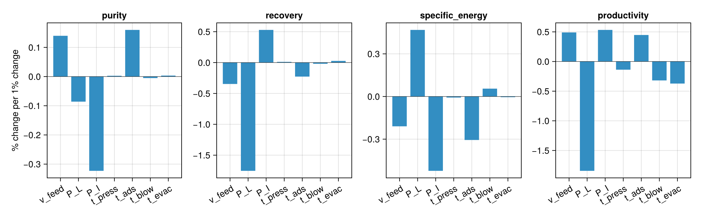

Gradients at cyclic steady state
This example computes how the performance of the four-stage VSA cycle of Haghpanah et al. (2013) at cyclic steady state changes with its operating settings: the feed velocity, the blowdown and evacuation pressures, and the durations of the four stages. These are the gradients an optimiser needs, and here they come from adjoints rather than from re-running the cycle to steady state once per setting.
The cycle maps its initial state x to its final state Φ(x, p), where p holds the settings. Cyclic steady state is the fixed point x* = Φ(x*, p), which moves when p changes. For an objective J over one cycle, the implicit function theorem gives
dJ/dp = ∂J/∂p + μᵀ ∂Φ/∂p, where (I − ∂Φ/∂x)ᵀ μ = ∂J/∂x.Every term comes from adjoint solves over a single cycle: GMRES finds μ from products with (∂Φ/∂x)ᵀ, and a last adjoint gives the derivatives with respect to all parameters and stage settings together.
import Mocca
using Mocca.Units
using CairoMakie1. The process and its design variables
The four-stage VSA process with 30 cells. Each stage starts with short steps (first_dt, the default). Without them, the 1 s step at the abrupt start of a stage can converge to a slightly different solution for a slightly different start, and the cycle map jumps. A gradient of a map that jumps is meaningless.
process = Mocca.four_stage_vsa_process(ncells = 30)Process four-stage VSA: CO2/N2 feed at 1.0 bar, 298.15 K, capturing CO2
Bed: fixed bed of zeolite 13X, 30 cells
bottom V_feed (feed), from boundary at 1.0 bar; V_vacuum (extract), to boundary at 0.1 bar
top V_product (product), to boundary at 1.0 bar
cycle of 4 stages, 100.0 s:
pressurisation 15.0 s V_feed
adsorption 15.0 s V_feed, V_product
blowdown 30.0 s V_product
evacuation 40.0 s V_vacuum
A design variable names the places it sets. Pressures carry over from step to step, so one place is enough for each: the evacuation pressure is also where the next pressurisation starts. Since durations are among the variables, a stage of a different duration keeps the steps it has now, stretched in proportion, which is what the duration gradients describe.
Mocca.add_variable!(process, :v_feed, ("adsorption", :velocity))
Mocca.add_variable!(process, :P_L, ("evacuation", :to))
Mocca.add_variable!(process, :P_I, ("blowdown", :to))
Mocca.add_variable!(process, :t_press, ("pressurisation", :duration))
Mocca.add_variable!(process, :t_ads, ("adsorption", :duration))
Mocca.add_variable!(process, :t_blow, ("blowdown", :duration))
Mocca.add_variable!(process, :t_evac, ("evacuation", :duration))
processProcess four-stage VSA: CO2/N2 feed at 1.0 bar, 298.15 K, capturing CO2
Bed: fixed bed of zeolite 13X, 30 cells
bottom V_feed (feed), from boundary at 1.0 bar; V_vacuum (extract), to boundary at 0.1 bar
top V_product (product), to boundary at 1.0 bar
cycle of 4 stages, 100.0 s:
pressurisation 15.0 s V_feed
adsorption 15.0 s V_feed, V_product
blowdown 30.0 s V_product
evacuation 40.0 s V_vacuum
variables: v_feed, P_L, P_I, t_press, t_ads, t_blow, t_evac2. Performance and its gradient at cyclic steady state
performance_gradient finds the steady state — Anderson acceleration close to it, then Newton's method on the cycle map, with its Jacobian from one adjoint per bed variable — and then the gradients. The gradient is only as accurate as the steady state, since the slowest mode of this cycle decays by only about 1% per cycle. Purity, recovery, energy and productivity are ratios of sums over the cycle (the CO₂ and the gas in the extract, the CO₂ fed, the pump and compressor work), and their gradients follow by the quotient rule.
g = Mocca.performance_gradient(process)
metrics = g.metrics[(:purity, :recovery, :specific_energy, :productivity)]
for (k, v) in pairs(metrics)
println(rpad(k, 18), round(v, sigdigits = 4))
endpurity 0.7951
recovery 0.3668
specific_energy 141.3
productivity 0.2366Relative sensitivities, (x/J) dJ/dx: the percentage change in each metric for a 1% change in each setting.
names = Mocca.variable_names(process)
println(rpad("", 10), join([rpad(k, 18) for k in keys(metrics)]))
for n in names
println(rpad(n, 10), join([rpad(round(process[n] * g.gradients[m][n] / metrics[m], sigdigits = 3), 18) for m in keys(metrics)]))
end purity recovery specific_energy productivity
v_feed 0.14 -0.347 -0.21 0.49
P_L -0.0859 -1.75 0.468 -1.84
P_I -0.323 0.529 -0.523 0.533
t_press 0.00267 0.0113 -0.00721 -0.138
t_ads 0.16 -0.227 -0.306 0.447
t_blow -0.0051 -0.0194 0.0553 -0.319
t_evac 0.00335 0.0268 -0.00458 -0.3723. Check against finite differences
Change the feed velocity and the adsorption time by ±0.01%, converge each case to steady state with Newton's method from the last steady state, and difference the metrics.
for n in (:v_feed, :t_ads)
x0 = process[n]
h = 1e-4 * x0
process[n] = x0 + h
up = Mocca.performance(process; tol = 1e-10)
process[n] = x0 - h
down = Mocca.performance(process; tol = 1e-10)
process[n] = x0
println(n)
for k in keys(metrics)
fd = (up[k] - down[k]) / 2h
println(" ", rpad(k, 18), "adjoint ", round(g.gradients[k][n], sigdigits = 8), " finite difference ", round(fd, sigdigits = 8))
end
endv_feed
purity adjoint 0.1111054 finite difference 0.1111054
recovery adjoint -0.12712426 finite difference -0.12712426
specific_energy adjoint -29.616432 finite difference -29.616432
productivity adjoint 0.1159269 finite difference 0.1159269
t_ads
purity adjoint 0.0084748882 finite difference 0.0084748882
recovery adjoint -0.0055527974 finite difference -0.0055527974
specific_energy adjoint -2.880039 finite difference -2.880039
productivity adjoint 0.0070545496 finite difference 0.00705454964. Relative sensitivities
fig = Figure(size = (1100, 340))
for (j, m) in enumerate(keys(metrics))
ax = Axis(fig[1, j], title = String(m), xticks = (1:length(names), String.(names)),
xticklabelrotation = π / 6, ylabel = j == 1 ? "% change per 1% change" : "")
vals = [process[n] * g.gradients[m][n] / metrics[m] for n in names]
barplot!(ax, 1:length(vals), vals)
hlines!(ax, [0.0], color = :black, linewidth = 0.5)
end
fig
Example on GitHub
If you would like to run this example yourself, it can be downloaded from the Mocca.jl GitHub repository.
This page was generated using Literate.jl.